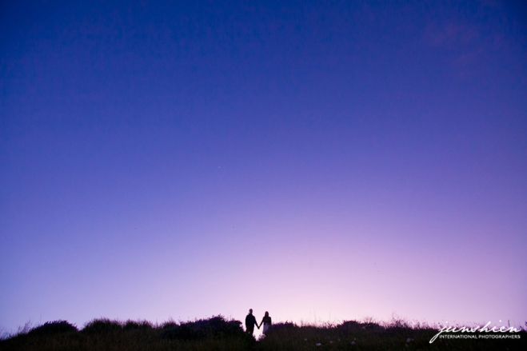

Posted on January 13, 2016 by
Posted on January 13, 2016 byNatural Lite is a beautiful free theme for WordPress created by Organic Themes. It’s a perfect theme for business websites with a focus on the environment. Whether you’re providing fishing charters or surf adventures, promoting local farmers markets or saving the whales, offering vegetarian…
Natural Lite is a beautiful free theme for WordPress created by Organic Themes. It’s a perfect theme for business websites with a focus on the environment. Whether you’re providing fishing charters or surf adventures, promoting local farmers markets or saving the whales, offering vegetarian…